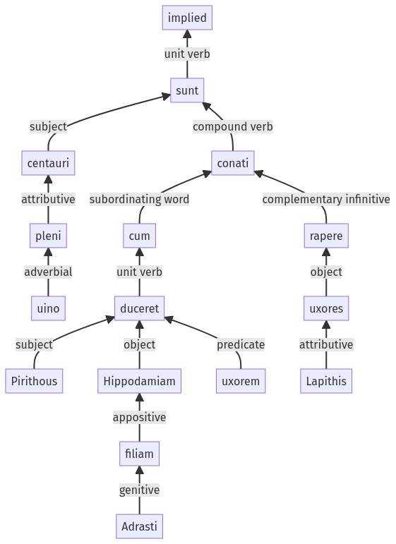

Hyginus, Fabulae, 33pr.3.1-33pr.3.19a
33pr.2.8-33pr.2.15a | 33pr.3.20-33pr.3.26a
Sentence 462
33pr.3.1-33pr.3.19a
item aliis in nuptiis, Pirithous Hippodamiam Adrasti filiam cum uxorem duceret, uino pleni centauri conati sunt rapere uxores Lapithis;
2 item aliis in nuptiis Pirithous Hippodamiam Adrasti filiam cum uxorem duceret
1 uino pleni centauri conati sunt rapere uxores Lapithis
item aliis in nuptiis, Pirithous Hippodamiam Adrasti filiam cum uxorem duceret, uino pleni centauri conati sunt rapere uxores Lapithis;
Highlighting:
- connecting words
- unit verb
- subject
- object
Color code:
- independent clause (level 1, intransitive verb)
- subordinate clause (level 2, transitive verb)
